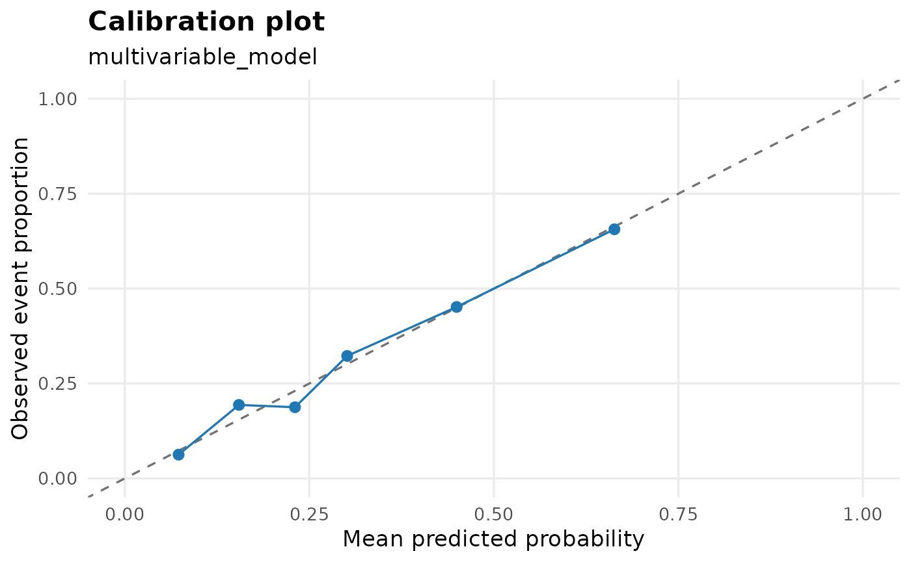
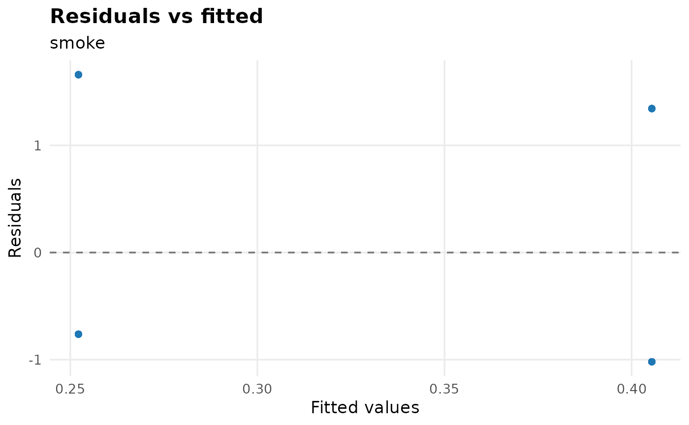
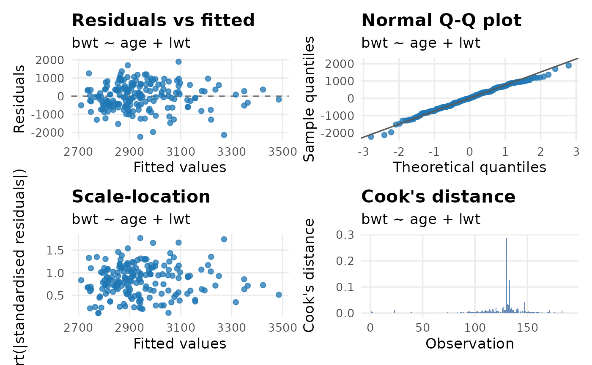

Diagnostics and Model Selection
Source:vignettes/diagnostics-selection.Rmd
diagnostics-selection.RmdBefore the final table goes into a manuscript, check the model. These helpers keep diagnostics close to the regression workflow. They are screening aids: interpret them with the study design, clinical or subject-matter judgement, and the diagnostics from the fitted model.
library(gtregression)
library(dplyr)
data("data_birthwt", package = "gtregression")
birthwt_data <- data_birthwt |>
mutate(
race = factor(race, levels = c(1, 2, 3),
labels = c("White", "Black", "Other")),
smoke = factor(smoke, levels = c(0, 1), labels = c("No", "Yes")),
ht = factor(ht, levels = c(0, 1), labels = c("No", "Yes")),
ui = factor(ui, levels = c(0, 1), labels = c("No", "Yes")),
low = factor(low, levels = c(0, 1), labels = c("Normal BW", "Low BW")),
ptl_cat = factor(ifelse(ptl > 0, "Yes", "No"), levels = c("No", "Yes"))
)
exposures <- c("age", "lwt", "race", "smoke", "ht", "ui", "ptl_cat")Convergence Screening
Use check_convergence() before interpreting model
estimates, especially for log-binomial and small or sparse
binary-outcome models. A non-converged model is a fitting warning, not a
finding.
check_convergence(
data = birthwt_data,
exposures = exposures,
outcome = low,
approach = logit,
multivariate = TRUE,
format = gt
)| Convergence check | |||
| Exposure | Model | Converged | Max fitted value |
|---|---|---|---|
| age + lwt + race + smoke + ht + ui + ptl_cat | logit | Yes | 0.880 |
| Screening aid only; inspect non-convergence, impossible fitted values, and model specification before interpreting estimates. | |||
For risk-ratio workflows, this same check helps users decide whether a log-binomial model fitted cleanly or whether a robust Poisson approach may be a more practical sensitivity analysis.
check_convergence(
data = birthwt_data,
exposures = c("smoke", "ht", "ui", "ptl_cat"),
outcome = low,
approach = logbinomial,
multivariate = TRUE,
format = flextable
)Exposure |
Model |
Converged |
Max fitted value |
|---|---|---|---|
smoke + ht + ui + ptl_cat |
logbinomial |
No |
|
Screening aid only; inspect non-convergence, impossible fitted values, and model specification before interpreting estimates. | |||
Collinearity Screening
check_collinearity() reports VIF-style diagnostics for
multivariable models. High VIF values are prompts to inspect coding,
overlap between predictors, and the scientific purpose of the model.
birthwt_multi <- multi_reg(
data = birthwt_data,
outcome = low,
exposures = exposures,
approach = logit
)
check_collinearity(birthwt_multi, format = gt)| Collinearity check | ||
| Variable | VIF | Interpretation |
|---|---|---|
| age | 1.04 | No collinearity |
| lwt | 1.14 | No collinearity |
| race | 1.11 | No collinearity |
| smoke | 1.16 | No collinearity |
| ht | 1.08 | No collinearity |
| ui | 1.02 | No collinearity |
| ptl_cat | 1.05 | No collinearity |
| Screening aid only; interpret VIF with model purpose, coding choices, sample size, and subject-matter knowledge. | ||
Adjusted-mode multi_reg() objects contain one model per
exposure. The collinearity output keeps that list structure so each
model can be inspected separately.
birthwt_adjusted <- multi_reg(
data = birthwt_data,
outcome = low,
exposures = c("smoke", "ht", "ui", "ptl_cat"),
adjust_for = c("age", "lwt", "race"),
approach = logit
)
check_collinearity(birthwt_adjusted, format = tibble)## $smoke
## # A tibble: 4 × 3
## Variable VIF Interpretation
## <chr> <dbl> <chr>
## 1 smoke 1.14 No collinearity
## 2 age 1.03 No collinearity
## 3 lwt 1.06 No collinearity
## 4 race 1.1 No collinearity
##
## $ht
## # A tibble: 4 × 3
## Variable VIF Interpretation
## <chr> <dbl> <chr>
## 1 ht 1.07 No collinearity
## 2 age 1.02 No collinearity
## 3 lwt 1.14 No collinearity
## 4 race 1.03 No collinearity
##
## $ui
## # A tibble: 4 × 3
## Variable VIF Interpretation
## <chr> <dbl> <chr>
## 1 ui 1.01 No collinearity
## 2 age 1.03 No collinearity
## 3 lwt 1.07 No collinearity
## 4 race 1.04 No collinearity
##
## $ptl_cat
## # A tibble: 4 × 3
## Variable VIF Interpretation
## <chr> <dbl> <chr>
## 1 ptl_cat 1.03 No collinearity
## 2 age 1.05 No collinearity
## 3 lwt 1.07 No collinearity
## 4 race 1.04 No collinearityModel Fit Plots
plot_model_fit() turns fitted models into quick
diagnostic plots. It accepts raw lm() and
glm() objects, and it also works with models saved inside
uni_reg() and multi_reg() results.
For logistic regression, the calibration plot compares predicted probabilities with observed event proportions. Points close to the diagonal line suggest that the model predictions are reasonably aligned with the observed data. Calibration is usually most useful for multivariable models because predicted probabilities vary across many people.
plot_model_fit(
birthwt_multi,
type = calibration,
bins = 6
)
When a uni_reg() object contains several models, use
model_name to choose the exposure you want to inspect. For
a simple binary exposure, calibration may only show two points because
the model has only two fitted probabilities; in that situation, residual
and influence plots are usually more useful.
birthwt_uni <- uni_reg(
data = birthwt_data,
outcome = low,
exposures = c("age", "lwt", "smoke"),
approach = logit
)
plot_model_fit(
birthwt_uni,
model_name = smoke,
type = residual
)
For logistic models, residual plots often form two visible bands. That is a normal consequence of a 0/1 outcome and should be interpreted as a screening plot rather than a linear-model residual plot.
For linear regression, type = all shows the classic
residual, Q-Q, scale-location, and Cook’s distance views.
fit_lm <- lm(bwt ~ age + lwt, data = birthwt_data)
plot_model_fit(fit_lm)
Proportional Hazards Screening
For Cox models, use check_ph() before treating hazard
ratios as final. It reports Schoenfeld residual tests from
survival::cox.zph(), including a global test. Small
p-values suggest possible non-proportional hazards and should be
reviewed with plots, follow-up pattern, and clinical judgement.
data("data_lungcancer", package = "gtregression")
lung_data <- data_lungcancer |>
mutate(
trt = factor(trt, levels = c(1, 2),
labels = c("Standard treatment", "Test treatment")),
prior = factor(prior, levels = c(0, 10), labels = c("No", "Yes"))
)
cox_fit <- cox_reg(
data = lung_data,
time = time,
event = status,
exposures = c(trt, celltype, prior),
adjust_for = c(age, karno)
)
check_ph(cox_fit, format = gt)| Proportional hazards check | ||||||
| Model | Term | Test | Chi-square | df | p-value | Interpretation |
|---|---|---|---|---|---|---|
| trt | trt | Term | 0.28 | 1 | 0.594 | No evidence of PH violation |
| trt | age | Term | 2.10 | 1 | 0.147 | No evidence of PH violation |
| trt | karno | Term | 12.00 | 1 | <0.001 | Possible PH violation |
| trt | GLOBAL | Global | 19.10 | 3 | <0.001 | Possible PH violation |
| celltype | celltype | Term | 14.15 | 3 | 0.003 | Possible PH violation |
| celltype | age | Term | 1.99 | 1 | 0.158 | No evidence of PH violation |
| celltype | karno | Term | 14.77 | 1 | <0.001 | Possible PH violation |
| celltype | GLOBAL | Global | 30.18 | 5 | <0.001 | Possible PH violation |
| prior | prior | Term | 1.87 | 1 | 0.171 | No evidence of PH violation |
| prior | age | Term | 2.18 | 1 | 0.140 | No evidence of PH violation |
| prior | karno | Term | 13.31 | 1 | <0.001 | Possible PH violation |
| prior | GLOBAL | Global | 22.29 | 3 | <0.001 | Possible PH violation |
| Screening aid only. Small p-values suggest possible non-proportional hazards; interpret with Schoenfeld residual plots, follow-up pattern, clinical context, and model purpose. alpha = 0.05; transform = km. | ||||||
Use format = tibble when you want to inspect or filter
the diagnostic results.
check_ph(cox_fit, transform = rank, format = tibble)## # A tibble: 12 × 7
## Model Term Test Chi.square df p.value Interpretation
## <chr> <chr> <chr> <dbl> <dbl> <dbl> <chr>
## 1 trt trt Term 0.278 1 0.598 No evidence of PH violat…
## 2 trt age Term 2.04 1 0.153 No evidence of PH violat…
## 3 trt karno Term 12.6 1 0.000377 Possible PH violation
## 4 trt GLOBAL Global 19.7 3 0.000191 Possible PH violation
## 5 celltype celltype Term 14.3 3 0.00249 Possible PH violation
## 6 celltype age Term 1.93 1 0.164 No evidence of PH violat…
## 7 celltype karno Term 15.4 1 0.0000877 Possible PH violation
## 8 celltype GLOBAL Global 30.6 5 0.0000114 Possible PH violation
## 9 prior prior Term 1.92 1 0.166 No evidence of PH violat…
## 10 prior age Term 2.13 1 0.145 No evidence of PH violat…
## 11 prior karno Term 14.0 1 0.000187 Possible PH violation
## 12 prior GLOBAL Global 23.0 3 0.0000401 Possible PH violationStepwise Model Selection
select_models() compares candidate models step by step.
It is useful for exploration, teaching, and sensitivity checks. It
should not replace a planned model based on study design or a causal
framework.
selected <- select_models(
data = birthwt_data,
outcome = low,
exposures = exposures,
approach = logit,
direction = forward,
format = gt
)
selected$table| Stepwise model selection | ||||||||
| Model | Formula | Predictors | AIC | BIC | Log-likelihood | deviance | Selected variables | Best AIC |
|---|---|---|---|---|---|---|---|---|
| 1 | low ~ 1 | 0 | 236.67 | 239.91 | -117.34 | 234.67 | No | |
| 2 | low ~ ptl_cat | 1 | 225.90 | 232.38 | -110.95 | 221.90 | ptl_cat | No |
| 3 | low ~ ptl_cat + age | 2 | 223.30 | 233.02 | -108.65 | 217.30 | ptl_cat + age | No |
| 4 | low ~ ptl_cat + age + ht | 3 | 221.12 | 234.09 | -106.56 | 213.12 | ptl_cat + age + ht | No |
| 5 | low ~ ptl_cat + age + ht + lwt | 4 | 217.43 | 233.64 | -103.72 | 207.43 | ptl_cat + age + ht + lwt | No |
| 6 | low ~ ptl_cat + age + ht + lwt + ui | 5 | 217.15 | 236.60 | -102.58 | 205.15 | ptl_cat + age + ht + lwt + ui | Yes |
| Selection direction: forward. | ||||||||
| Screening aid only; compare candidate models with study design, clinical or subject-matter judgement, and model diagnostics. | ||||||||
The selected direction is recorded in the formatted table footer. Backward and both-direction searches are available using the same interface.
select_models(
data = birthwt_data,
outcome = low,
exposures = exposures,
approach = logit,
direction = backward,
format = tibble
)$results_table## # A tibble: 2 × 8
## model_id formula n_predictors AIC BIC logLik deviance selected_vars
## <int> <chr> <int> <dbl> <dbl> <dbl> <dbl> <chr>
## 1 1 low ~ age + l… 7 215. 244. -98.4 197. age + lwt + …
## 2 2 low ~ lwt + r… 6 214. 240. -98.9 198. lwt + race +…
select_models(
data = birthwt_data,
outcome = low,
exposures = exposures,
approach = logit,
direction = both,
format = tibble
)$results_table## # A tibble: 6 × 8
## model_id formula n_predictors AIC BIC logLik deviance selected_vars
## <int> <chr> <int> <dbl> <dbl> <dbl> <dbl> <chr>
## 1 1 low ~ 1 0 237. 240. -117. 235. ""
## 2 2 low ~ ptl_cat 1 226. 232. -111. 222. "ptl_cat"
## 3 3 low ~ ptl_cat… 2 223. 233. -109. 217. "ptl_cat + a…
## 4 4 low ~ ptl_cat… 3 221. 234. -107. 213. "ptl_cat + a…
## 5 5 low ~ ptl_cat… 4 217. 234. -104. 207. "ptl_cat + a…
## 6 6 low ~ ptl_cat… 5 217. 237. -103. 205. "ptl_cat + a…What To Inspect
-
check_convergence(): convergence status and maximum fitted probabilities. Useformat = gtorformat = flextablefor viewing tables. -
check_collinearity(): VIF and interpretation. Nested model outputs keep their list structure when formatted. -
plot_model_fit(): residual, calibration, observed-versus-predicted, and influence plots forlm/glmmodels and storeduni_reg()/multi_reg()fitted models. -
check_ph(): Schoenfeld residual proportional hazards tests for Cox models, including term-level and global tests. -
select_models():$results_table,$best_model,$all_models, and$direction;$tableis added whenformat = gtorformat = flextable.